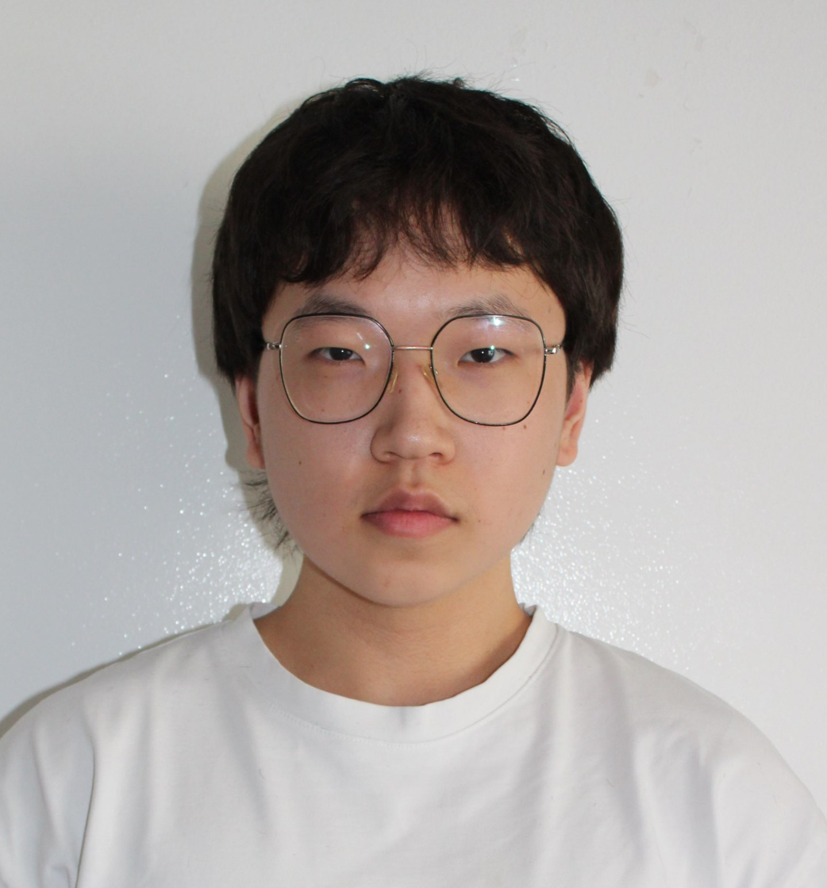

Étudiante en première année de BUT R&T à l'IUT Grand Ouest Normandie, site d'IFS. Ce portfolio retrace mon développement de compétences à travers les situations d'apprentissage vécues au cours de ma formation.

| Formation | BUT Réseaux & Télécommunications |
| IUT | Grand Ouest Normandie — IFS |
| Année | 1re année |
| Projets réalisés | 5 |
Après un baccalauréat STI2D, j'ai choisi de poursuivre en BUT Réseaux & Télécommunications afin de développer mes compétences en réseaux informatiques, administration système et sécurité.
Intéressée par les métiers de l'administration réseau et de la cybersécurité. Souhaite approfondir les domaines de la sécurité des systèmes d'information et du déploiement d'infrastructures réseau en entreprise.